A 135-Year-Old Legend
Is Coming to Perth.
135+ years. Millions of deliveries. One legendary legacy.
Now, Mumbai Dabbawala is coming to Perth.
The world's most reliable lunch run
arrives in Perth this September.
Join the waitlist to pick your suburb.
-
Butter Chicken
Charred chicken in a tomato and cream gravy.
-
Hyderabadi Biryani
Rice, spice and meat, sealed in one clay pot.
-
Masala Dosa
A crisp rice crêpe folded over spiced potato.
-
Paneer Tikka
Paneer in yoghurt and spice, blistered over flame.
-
Chole Bhature
Spiced chickpeas with a puffed, golden bhatura.
-
Gulab Jamun
Milk dumplings warm in cardamom and rose syrup.
Since 1890
135 years of never
missing lunch.
Every working morning in Mumbai, five thousand dabbawalas collect home-cooked lunches from kitchens and put 200,000 of them on the right desk by noon — by bicycle, handcart and suburban train.
-
135
years running,
since 1890 -
5,000+
carriers on
the network -
200k+
lunches carried
every day
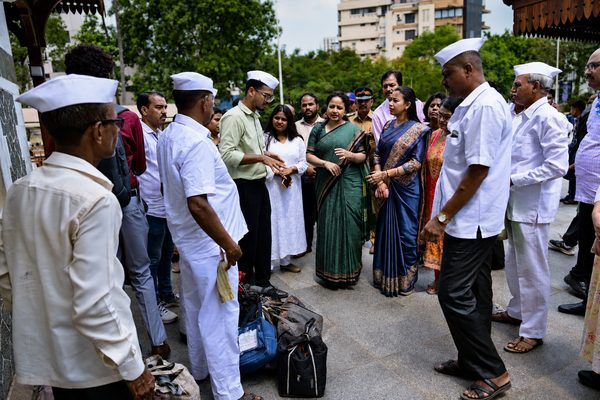
The run
From Mumbai to Perth.
The Dabba Story Continues.
Five thousand carriers move 200,000 home-cooked lunches across Mumbai every working morning, routed by nothing but a code painted on each lid. That same run opens in Perth on 14 September 2026.
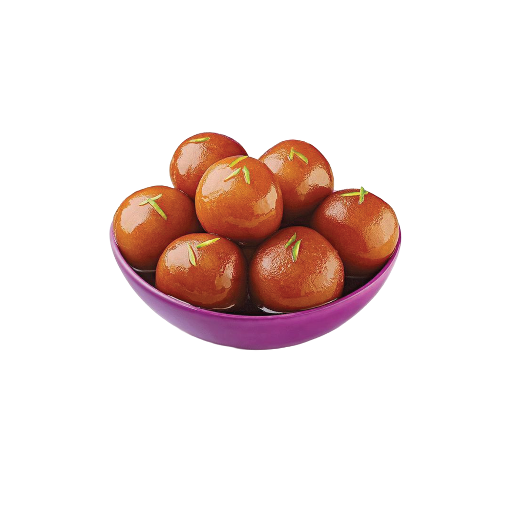
The run
From Mumbai to Perth. The Dabba Story Continues.
200,000 home-cooked lunches a day, routed by a code painted on each lid. The same run opens in Perth on 14 September 2026.
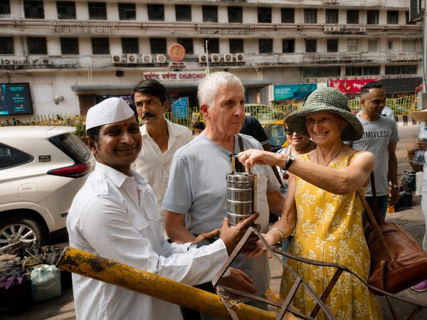
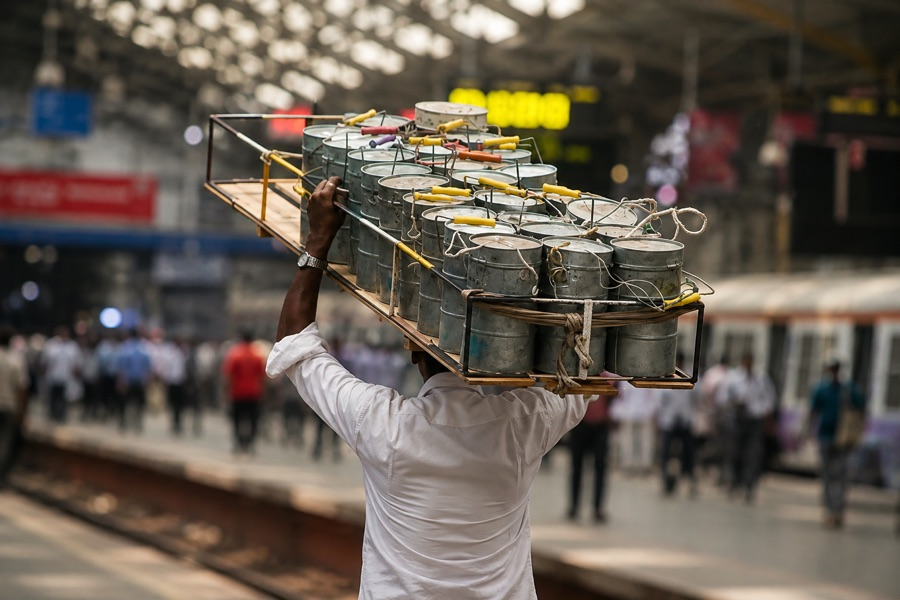
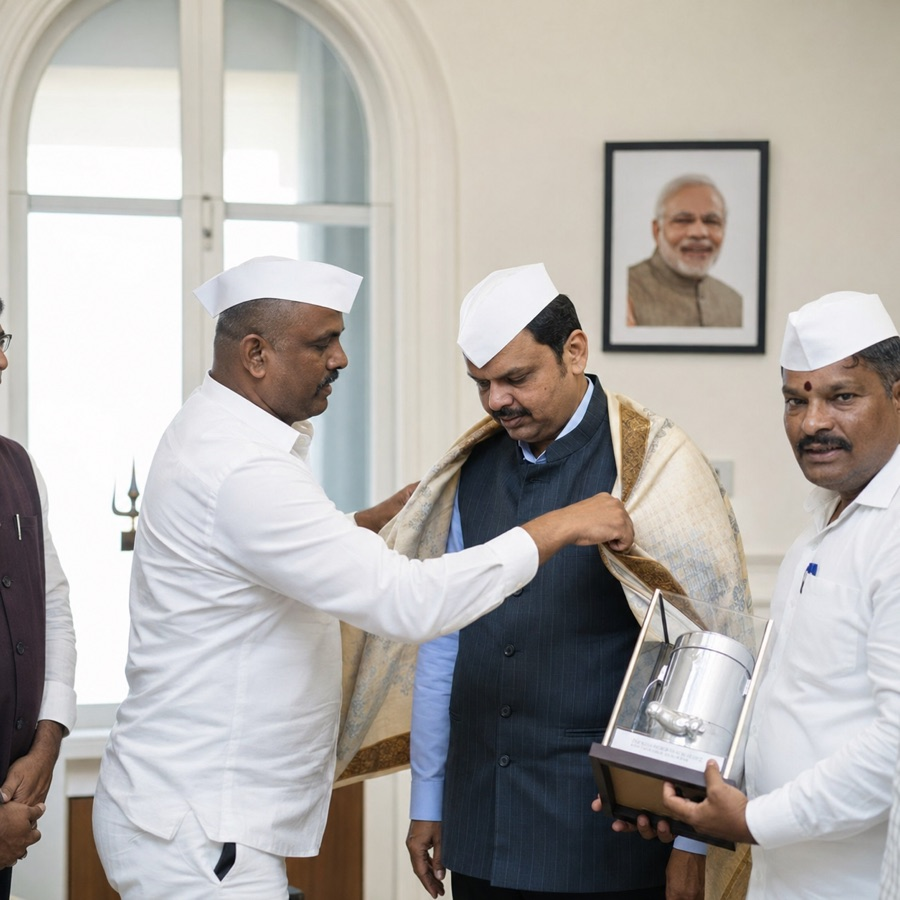
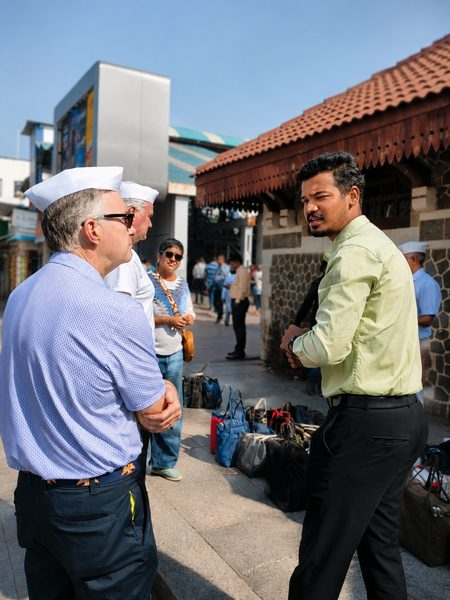
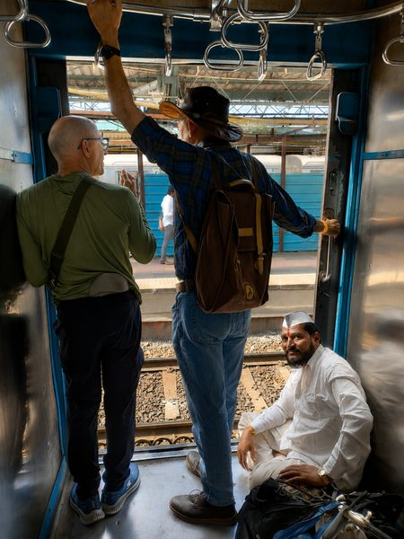
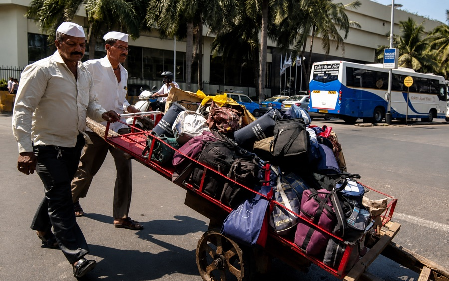
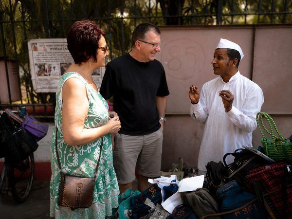
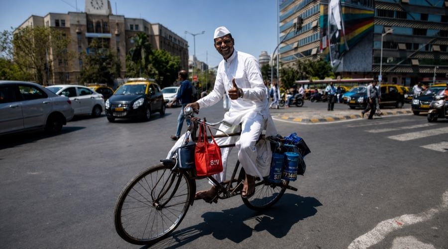
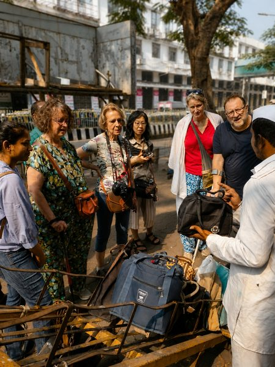
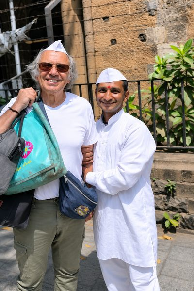
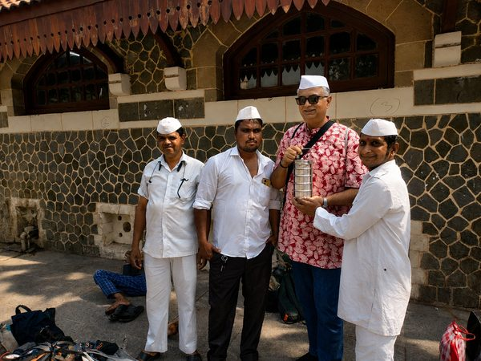
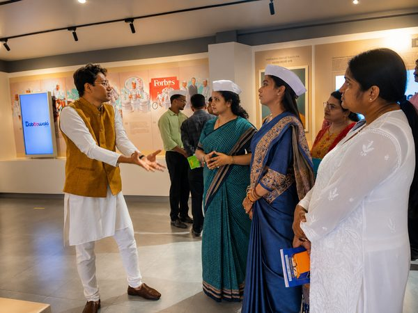
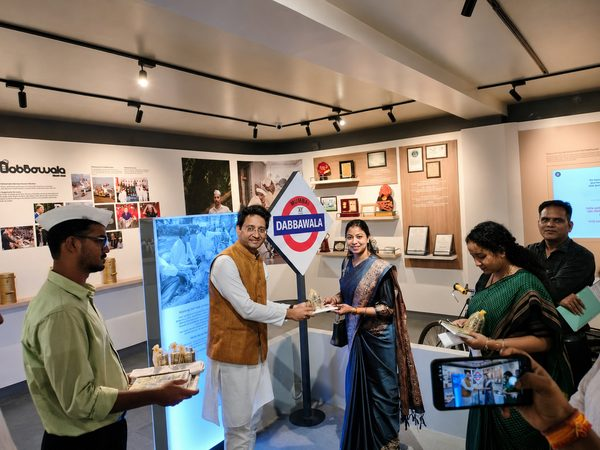
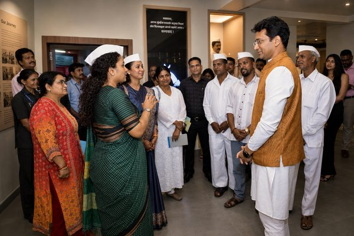
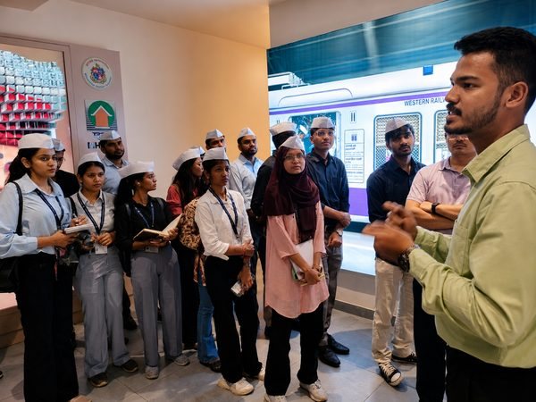
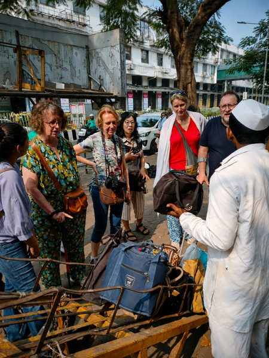
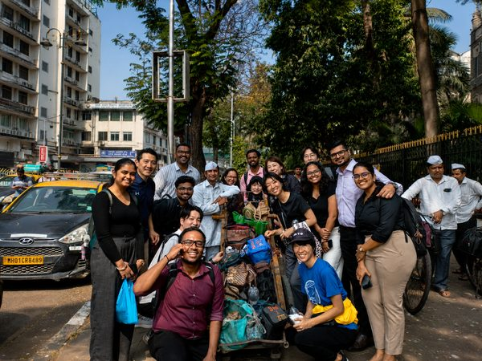
The waitlist
Don't Just Watch History.
Be Part of It.
Join the waitlist and be first through the door when we launch.
Launching soon
Perth's corridor opens 14 September 2026.
Email only — we never publish a phone number and we never call. One email, the week your suburb goes live.